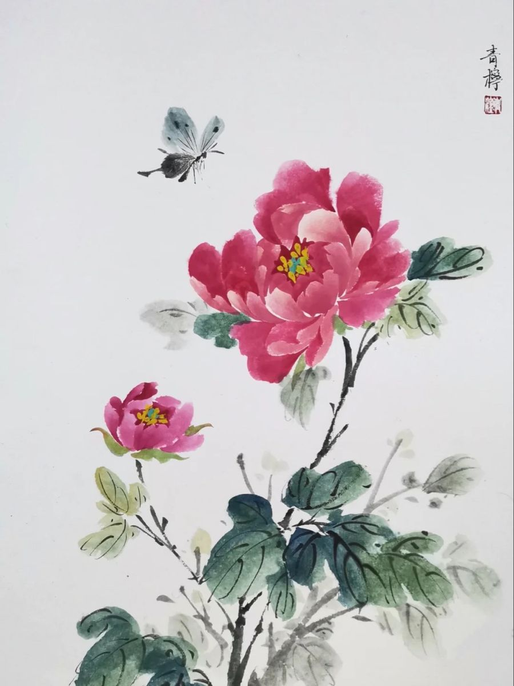
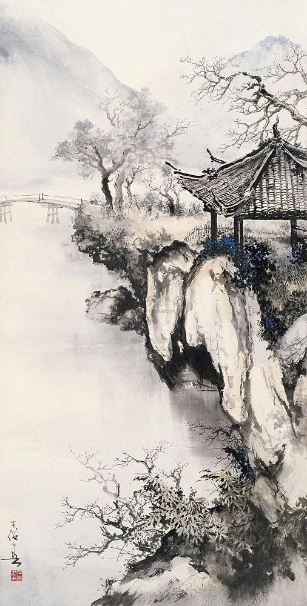
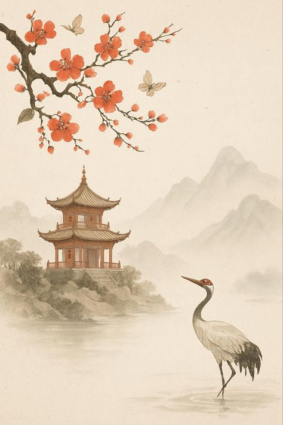
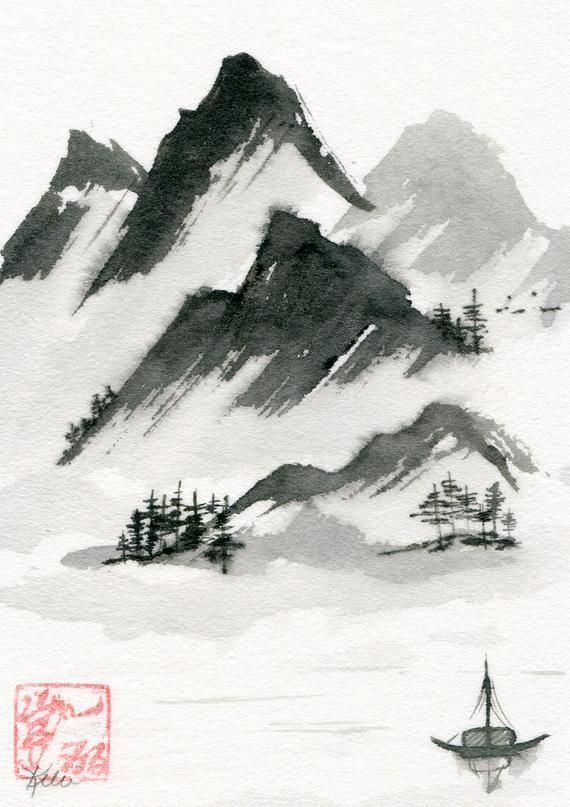
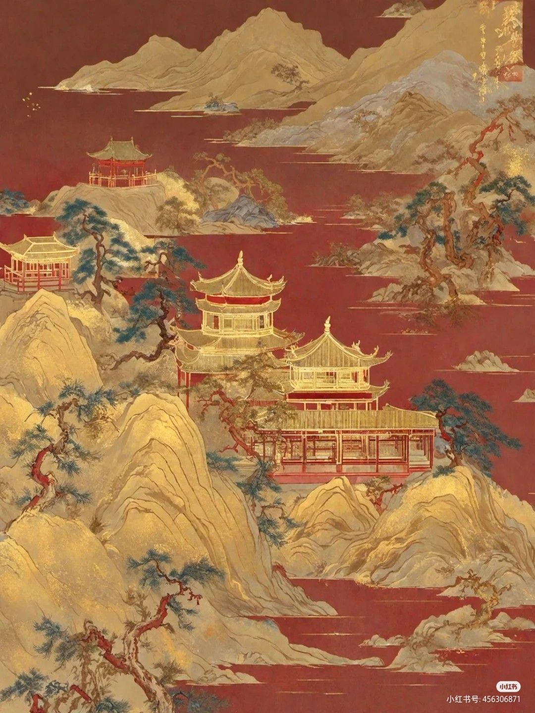
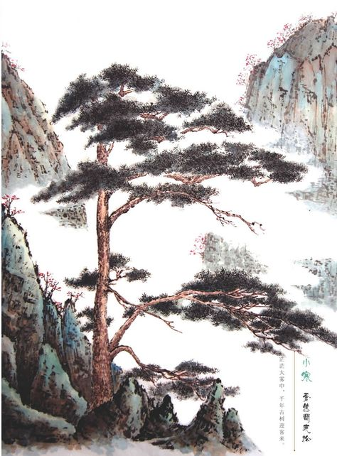
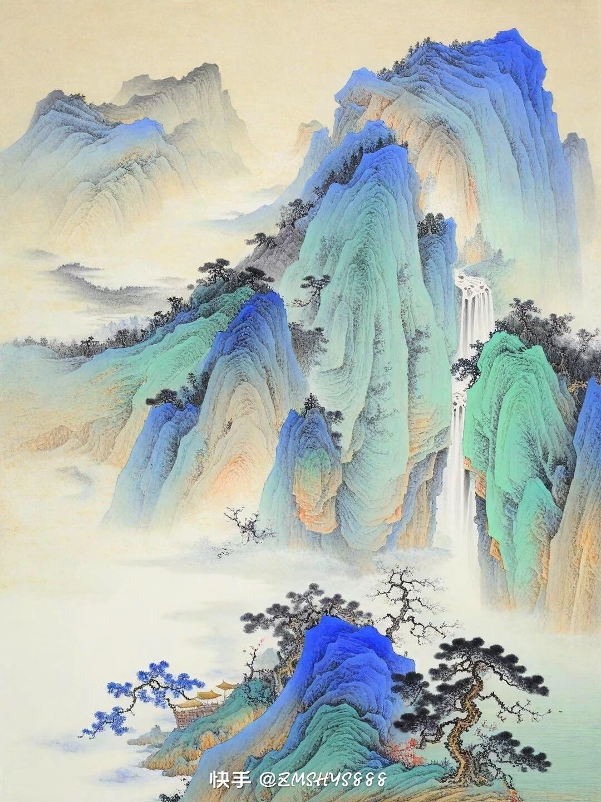
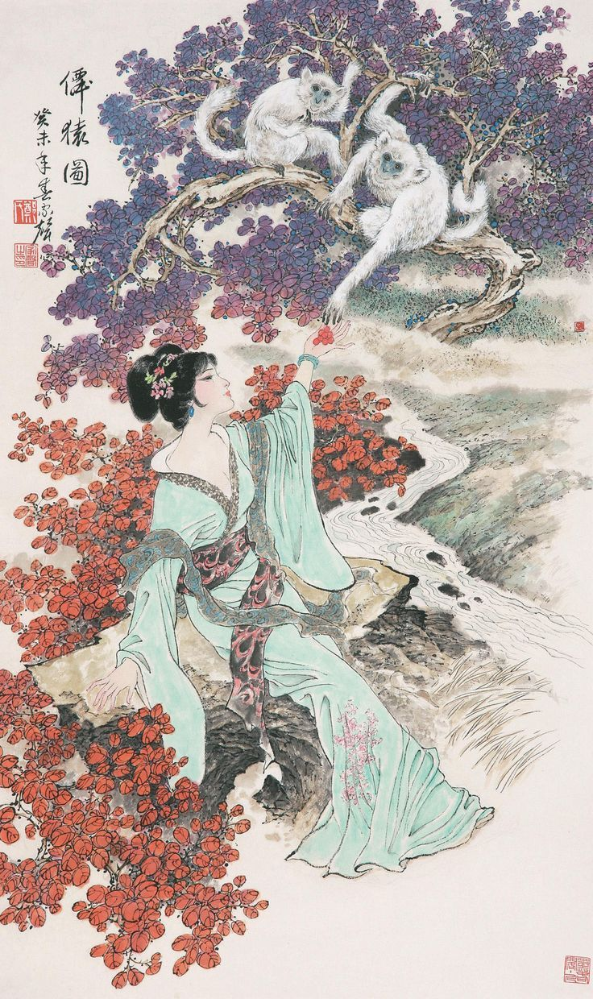

🏔️ 山水画 — 天地之心
🏔️ Landscape — Heart of Nature
🏔️ Пейзаж — Сердце природы
山水画是中国画的正统。"外师造化，中得心源"——观察自然，融入内心。范宽《溪山行旅图》雄浑壮丽，郭熙《早春图》生机盎然，黄公望《富春山居图》被誉为"画中之兰亭"。
«Учись у природы внешне, получай от сердца внутренне». Фань Куань, Го Си, Хуан Гунван — мастера пейзажа.

《溪山行旅图》· 范宽

《芙蓉锦鸡图》· 赵佶

《簪花仕女图》· 周昉

《早春图》· 郭熙

《富春山居图》· 黄公望

《墨葡萄图》· 徐渭

《虾》· 齐白石

《孤禽图》· 八大山人
🌸 花鸟画 — 一花一世界
🌸 Flower-Bird — World in a Bloom
🌸 Цветы и птицы — Мир в цветке
"一花一世界，一叶一菩提"。宋徽宗赵佶的工笔花鸟色彩华贵，徐渭的大写意笔墨淋漓，八大山人的鱼鸟寄寓亡国之痛，齐白石的虾充满生活情趣。
«Цветок — это мир, лист — это бодхи». Хуэйцзун, Сюй Вэй, Бада Шаньжэнь, Ци Байши — каждый уникальный голос.
📜 文人画 — 诗书画印
📜 Literati — Poetry & Painting
📜 Интеллектуалы — Поэзия и живопись
苏轼："论画以形似，见与儿童邻"。倪瓒画竹"聊写胸中逸气"。文人画超越视觉，成为哲学与生活态度。
Су Ши: судить по сходству — детский подход. Ни Цзань: «выразить свободный дух». Живопись как философия.